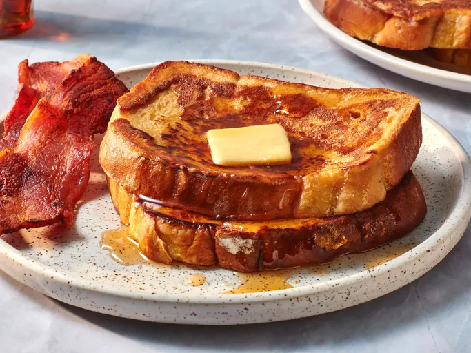

Home
French Toast

Description
This is the best French toast recipe. It's different because it uses flour. I have given it to some friends and they've all liked it better than the French toast they usually make!
This fluffy French toast recipe is crisp on the outside, but perfectly soft and tender on the inside.
What Makes French Toast Fluffy?
The secret ingredient in this fluffy French toast recipe: all-purpose flour! Flour binds the liquids together, which creates a more traditional “batter” and helps prevent soggy results. This extra ingredient ensures the French toast is crispy on the outside, but soft and fluffy on the inside.
Ingredients
- 1/4 cup all purpose flour
- 1 cup milk
- 3 large eggs
- 1 table spoon white sugar
- 1 teaspoon vanilla extract
- 1/2 teaspoon ground cinnamon
- 1 pinch salt
- 12 slices of bread
Steps
- Gather all ingredients.
- Place flour into a large mixing bowl; slowly whisk in milk until smooth. Whisk in eggs, sugar, vanilla, cinnamon, and salt until well combined.
- Heat a lightly oiled griddle or frying pan over medium heat. Meanwhile, soak bread slices in milk mixture until saturated.
- Working in batches, cook bread on the preheated griddle or pan until golden brown on both sides, about 2 minutes per side.
- Serve hot and enjoy.